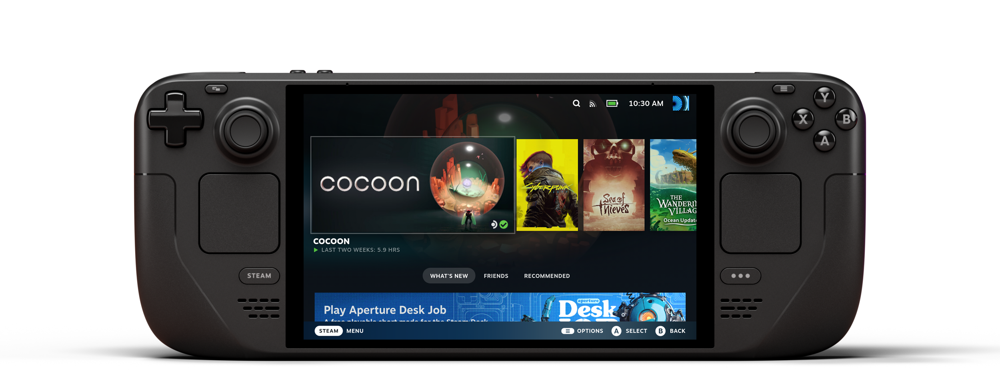
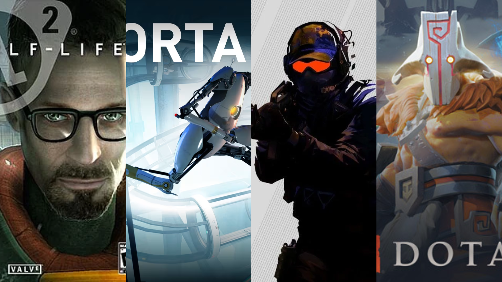

Valve
Sobre a empresa
Valve é uma empresa norte-americana de desenvolvimento de jogos, fundada em 1996. Ela ficou conhecida por produzir jogos de grande sucesso e por desenvolver a plataforma digital Steam.
A Steam foi lançada em 2003 e se tornou uma das principais plataformas de distribuição digital de jogos para computadores. Por meio dela, os usuários podem comprar jogos, organizar suas bibliotecas e interagir com outros jogadores.
Steam Deck

O Steam Deck é um dispositivo portátil desenvolvido pela Valve e lançado em 2022. Ele permite executar diversos jogos disponíveis na Steam sem a necessidade de utilizar um computador de mesa.
O aparelho possui controles integrados, tela própria e sistema operacional SteamOS, baseado em Linux. Sua proposta é permitir que os jogadores aproveitem parte de sua biblioteca de jogos de PC em formato portátil.
Jogos conhecidos
Entre os jogos desenvolvidos pela Valve estão Half-Life, Portal, Counter-Strike e Dota 2. Essas produções contribuíram para a popularidade da empresa na indústria dos videogames.
